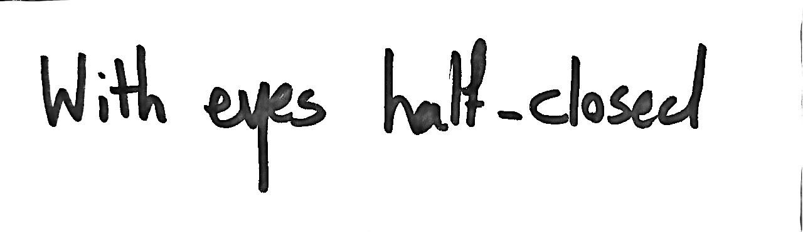
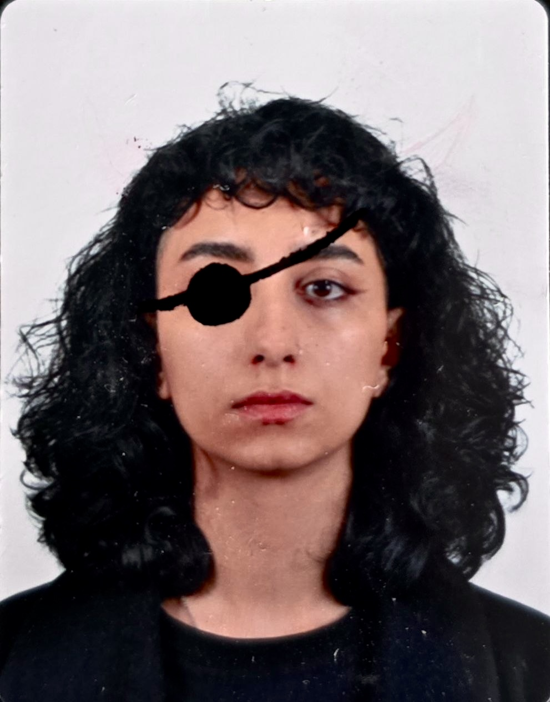
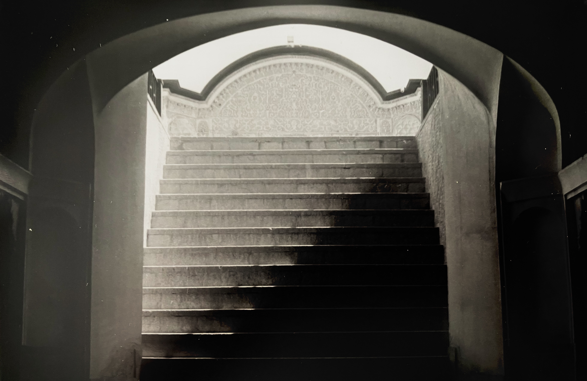

First paragraph of text goes here. Working on dissection of philosophy, performativity, and the quiet space between states of consciousness.

Second paragraph of text goes here. Exploring physical presence and textual fragments across space.

Final text fragment goes here...

